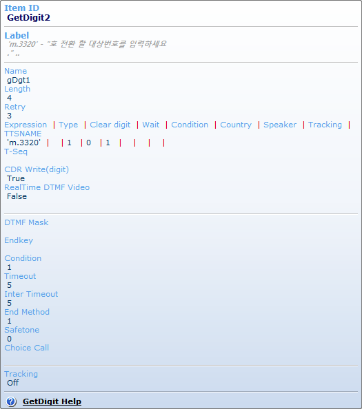

| Tooltip(Item Info View) | 시작 다음 이전 |
Component Item 의 속성의 내용을 속성창을 열지 않고도 빠르고 간단히 표시 합니다.
Tooltip 표시
· 정보 표시는 마우스 포인터를 아이템 위에 올리면 표시 되며, 표시된 정보 창에서 마우스를 내리면 사라 집니다. · 아이템 속성 중에 리스트형식의 정보는 개수가 5개 이하인 경우만 상세히 표시하고 이상인 경우는 그 개수만 표시 합니다.(상세히 표시 할 때 각 컬럼은 "|" 로 구분 합니다) · 아이템 속성창이 탭으로 나누어져 있는 경우 선으로 나누어 표시 합니다. · 리스트 아이템의 각 필드의 구분자는 다른 색(빨간색) 으로 표시 합니다. · 리본 메뉴 Tools > On/Off > Item Info Viewer 에서 기능을 켜고 끌수 있습니다.

|
| Copyrights(C) Bridgetec.co.kr. All Rights Reserved | 시작 다음 이전 |